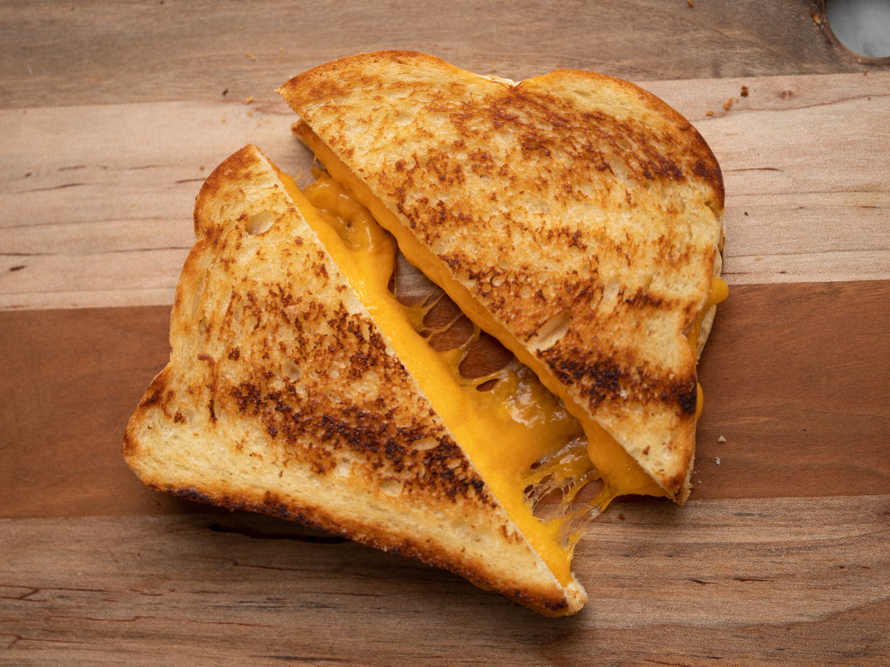

Grilled Cheese

Description
This is a long time created recipe that has been a staple for ages
it is something that is sacred to mankind so one must be cautious
when dealing with the recipe. This must be given with a lot of care.
and a lot of love.
Steps
- Place the cheese between two slices of bread.
- Get an pan and place some butter on the pan.
- Once the butter melts, place the sad cold sandwhich on the creamy buttery pan.
- Place for 30 seconds each side, until a golden crust is created.
- Eat the divine sandwhich.